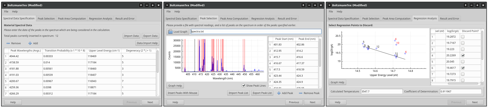

BoltzmannTex is a program for performing predefined transformations and visualisations on acquired data using simple Graphical User Intefaces. This software is mainly meant for well defined techniques that can be rigidly written as a program, and do not require regular testing, editing or substantial knowledge of programming for usage) for usage (such as in the case of python scripts).
The program currently implements 2 modules (called "subprograms"):
- OES Temperature Calculation:
Allows the user to calculate the temperature of thermal plasma using readings from Optical Emission Spectroscopy of the thermal plasma. - Simple Graph Plotting:
Implements a simple, rudimentary interface for the creation of plots of 2 values against eachother.
BoltzmannTex aims to be modular enough to be easily extendable for more subprograms.

BoltzmannTex is licensed under the GNU General Public Licence Version 3. Sourcecode and compilation instructions can be found here.